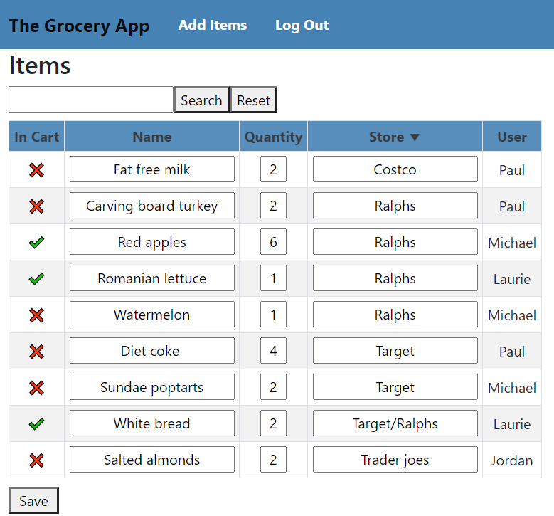
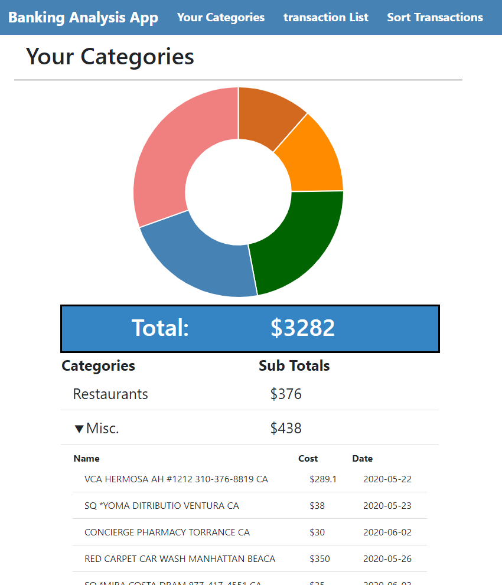
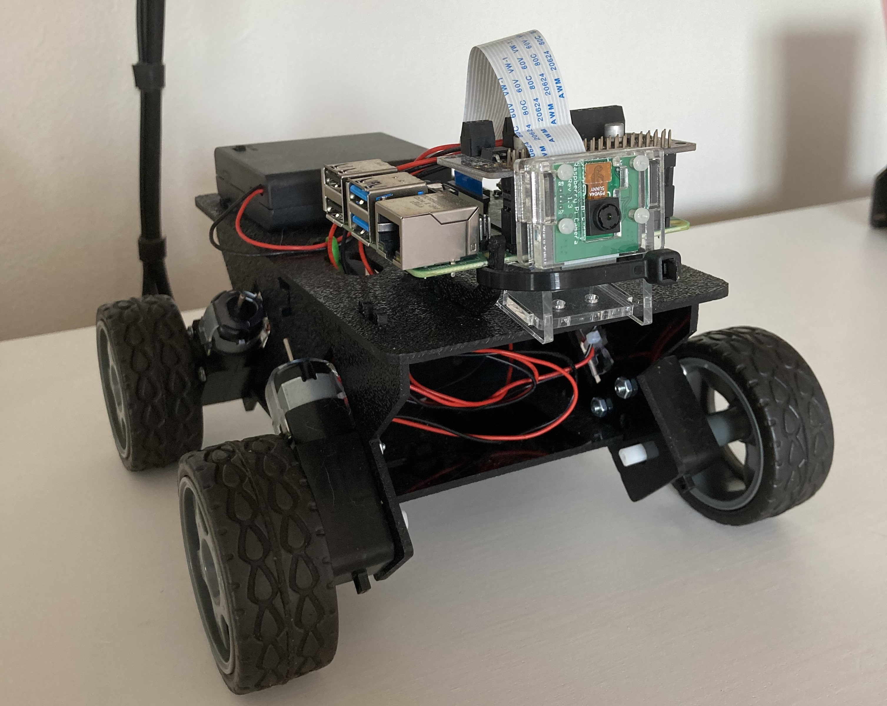

The Grocery App |
|
|---|---|
|  | The Grocery App is an online grocery list you can use to easily keep track of items you need to buy at the store. Developed during the Coronavirus pandemic, the app allows several families or neighbors to share a list so they can get items for eachother. I built it using Angular, a framework designed and used by Google, combined with Java for data handling and User Protection. |
The Banking App |
|
|---|---|
|  | The Banking Analysis App is a bank statement analyzer that automatically sorts your transactions into your own personalized categories. I developed this app to settle a dispute between my family about which one of us spends the most money, but the app is also more than capable of sorting as many transactions as you can throw at it. I built it using Angular, a framework designed and used by Google, combined with Java for data handling and User Protection. |
Machine Learning Project |
|
|---|---|
|  | The Machine Learning project was created so that I could learn more how to use it to detect and track objects with a robot. I developed Pi Bot to track brightly colored balls, but he can be used to track virtually anything if you calibrate him correctly. |